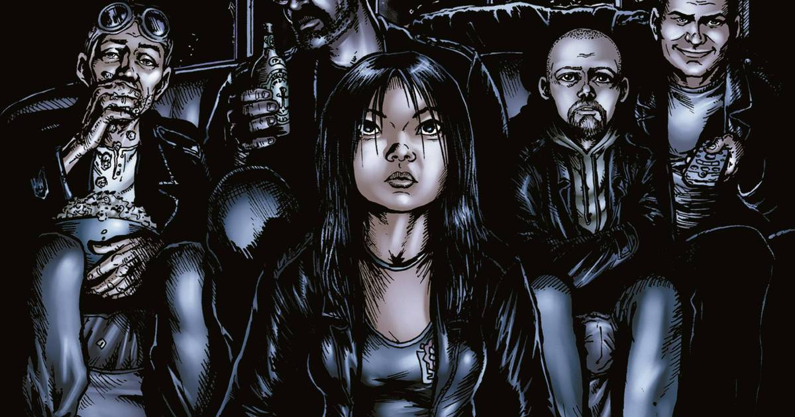

HQ x Série
Como muita gente deve saber, The Boys é baseada em uma polêmica história em quadrinhos de Garth Ennis e Darick Robertson. Após apenas sete edições, o título conseguiu ser banido do selo DC/Wildstorm porque, bem, a trama basicamente mostra análogos da Liga da Justiça fazendo todo tipo de atrocidade. A verdade é que a adaptação para a TV ficou bem melhor que o material original, que conta com piadas ainda mais infames e um humor que beira o mau gosto. Adaptações costumam trazer algumas novidades para surpreender os fãs que conhecem de cabo a rabo o material original. Ezequiel, Mesmer e Translúcido são personagens que não existem nas histórias em quadrinhos.
Ezequiel é baseado em um pedófilo, enquanto Mesmer, interpretado por um adulto e engraçado Haley Joel Osment (o garotinho que via gente morta em Sexto Sentido), foi criado apenas para o show. Já Translúcido tem inspiração em no alienígena Jack de Júpiter, uma paródia ao Caçador de Marte e que podia ficar invisível nas revistas de The Boys.
Outra coisa que muda bastante é a origem da Kimiko. Na produção, ela foi uma criança-soldado que recebeu o Composto V, aplicado por seus compatriotas guerrilheiros. Ela foi um subproduto da Vought para criar super vilões, já que a empresa enviou o composto para os terroristas, para reforçar a demanda por supers que só eles podem fabricar.
Já nos quadrinhos, Kimiko comeu o Composto V por acidente quando bebê e se tornou a mais poderosa do grupo de Billy. Tirando Frenchie, ninguém entende o que ela pensa, mas o grupo pode contar com ela para arrancar alguns rostos e ser bem violenta. Outra mudança foi em relação ao nome, já que nas publicações ela é chamada apenas de Fêmea.
Ademais a versão do Capitão Pátria nos gibis é, basicamente, um pirralho mimado com os poderes de um deus e uma lista interminável de vícios. Tudo o que ele faz é motivado por seu desejo infantil de ser levado a sério, embora na metade das vezes ele aja impulsivamente.
Na TV, ele é mais astuto e manipulador, embora mantenha o comportamento temperamental. Além disso, ele nutre uma bizarra relação de “mãe-amante” com Stillwell — algo que nunca aconteceria nos quadrinhos, já que ele desprezava o representante corporativo.
Protagonistas
Karl-Heinz Urban é um ator neozelandês. Filho de um fabricante de couros, seu pai esperava que ele seguisse nos negócios da família, mas isso não era o que ele queria.
Jack Henry Quaid é um ator americano. Filho do ator Dennis Quaid e da atriz Meg Ryan, Jack estreou como ator com um papel menor no filme distópico Jogos Vorazes. Quaid passou a desempenhar o papel principal do vigilante Hughie Campbell na série de super-heróis da Amazon Prime Video, The Boys.
Antony Starr é um ator neozelandês mais conhecido por seu papel principal na série original da Amazon Prime Video, The Boys, que é baseada na série de quadrinhos de mesmo nome, interpretando o super-herói Homelander.
Erin Moriarty é uma atriz americana. Ela é mais conhecida por seu papel como Annie January / Starlight na série Amazon Prime Video The Boys, baseada na série de quadrinhos de mesmo nome. Antes de The Boys, ela teve papéis notáveis em Jessica Jones da Netflix, True Detective da HBO e Red Widow da ABC.